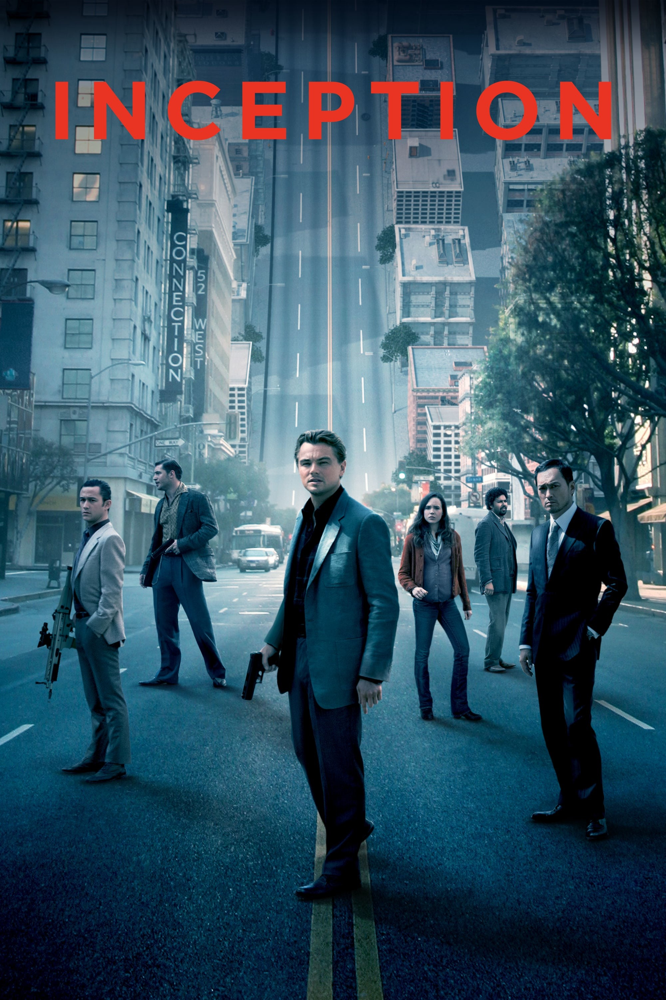

Who am I?
 ×
Github
Instagram
WhatsApp
Teams
×
Github
Instagram
WhatsApp
Teams

Who am I?
Let's start with the fact that my name is Alisiia (could be Alicia, perhaps). I was born in a small town, Donetsk region (eastern Ukraine), but I lived half my life in Kiev region. However, everything around me is changing and so is my life, because of circumstances I had to move a year ago in the Netherlands. That's where my journey in my specialty begins.

About a thief who steals corporate secrets through the use of dream-sharing technology is given the inverse task of planting an idea into the mind of a C.E.O., but his tragic past may doom the project and his team to disaster.
When Earth becomes uninhabitable in the future, a farmer and ex-NASA pilot, Joseph Cooper, is tasked to pilot a spacecraft, along with a team of researchers, to find a new planet for humans.
A promising young drummer enrolls at a cut-throat music conservatory where his dreams of greatness are mentored by an instructor who will stop at nothing to realize a student's potential.